<!doctype html>
<html lang="en">
<head>
<meta charset="utf-8" />
<title>MyStudyFlow promo cards</title>
<!--
  Renders one 1080x1350 promotional card at a time, chosen with ?card=N.
  Screenshot the page at a 1080x1350 viewport to export each card.
  The device screenshots live in ./screens and are captured from the running
  app, so re-running the capture and reloading is all it takes to refresh them.
-->
<style>
  @import url('https://fonts.googleapis.com/css2?family=Manrope:wght@500;800&display=swap');

  :root {
    --rose: #EC4899;
    --plum: #241A2E;
    --ink: #08070C;
  }

  * { box-sizing: border-box; margin: 0; padding: 0; }

  /*
    The card is designed at 1080x1350 — the 4:5 portrait size social feeds
    want — and then scaled to whatever window it is opened in, so a screenshot
    of the window is the whole card with no border to crop off.
  */
  html, body, #root {
    width: 100vw;
    height: 100vh;
    overflow: hidden;
    background: var(--ink);
    font-family: Manrope, 'Segoe UI', system-ui, sans-serif;
    -webkit-font-smoothing: antialiased;
  }

  .card {
    position: absolute;
    top: 0;
    left: 0;
    width: 1080px;
    height: 1350px;
    transform-origin: top left;
    padding: 84px 72px 0;
    display: flex;
    flex-direction: column;
    overflow: hidden;
  }

  /* A wash of the app's own accent, so the card and the screenshot inside it
     read as the same product. Real elements rather than ::before/::after,
     because the rasteriser used for the PNG export does not draw pseudo
     elements reliably. */
  /* Painted into a canvas rather than declared as a CSS gradient: the
     rasteriser used for the PNG export copies canvas pixels straight across,
     but drops radial-gradient backgrounds. */
  .glow { position: absolute; top: 0; left: 0; }

  .card > * { position: relative; z-index: 1; }

  .wordmark {
    display: flex;
    align-items: center;
    gap: 16px;
    font-size: 24px;
    font-weight: 800;
    letter-spacing: 3px;
    color: rgba(255,255,255,0.55);
    margin-bottom: 28px;
  }

  /* The mark runs at full strength while the name beside it stays dimmed:
     the logo is the thing worth recognising, the name is a caption to it. */
  .wordmark img {
    width: 52px;
    height: 52px;
    object-fit: contain;
    display: block;
  }

  h1 {
    font-size: 84px;
    line-height: 0.98;
    font-weight: 800;
    letter-spacing: -2px;
    color: #FFFFFF;
    max-width: 14ch;
  }

  h1 em { font-style: normal; color: var(--rose); }

  p.sub {
    margin-top: 24px;
    font-size: 30px;
    line-height: 1.35;
    font-weight: 500;
    color: rgba(255,255,255,0.7);
    max-width: 24ch;
  }

  .stage {
    flex: 1;
    display: flex;
    align-items: flex-end;
    justify-content: center;
    gap: 44px;
    margin-top: 48px;
  }

  /*
    The phone frame.

    Its inner size holds the 645x1350 screenshots at their exact proportions,
    so nothing is cropped and no part of a card or row is sliced in half. The
    10px border sits outside that (box-sizing: border-box), which is why the
    outer sizes below are the inner ones plus 20.
  */
  .phone {
    border-radius: 44px;
    border: 10px solid #15121B;
    box-shadow: 0 40px 90px rgba(0,0,0,0.6), 0 0 0 1px rgba(255,255,255,0.08);
    overflow: hidden;
    background: #000;
    flex: none;
  }
  /*
    The screenshot carries its own corner radius — the frame's outer 44px less
    its 10px border — rather than relying on the frame's `overflow: hidden` to
    clip it. The rasteriser used for the PNG export does not apply a parent's
    rounded clip to a child image, so without this the screenshot keeps square
    corners inside a rounded bezel.
  */
  .phone img {
    display: block;
    width: 100%;
    height: auto;
    border-radius: 34px;
  }

  /*
    Only the width is set: the screenshot keeps its own proportions and the
    frame takes whatever height that comes to, so nothing can be stretched or
    cropped however the numbers are changed later.
  */
  .single .phone { width: 430px; }
  .pair .phone { width: 407px; }

  /*
    Offset but never rotated. A rotated screenshot has to be resampled onto a
    grid its pixels no longer line up with, and the app is full of hairlines —
    subject colour bars, chart gridlines — which come out of that visibly
    uneven, thickening and thinning along their length.
  */
  .pair .phone:first-child { transform: translateY(34px); }
  .pair .phone:last-child { transform: translateY(-8px); }
</style>
</head>
<body>
<div id="root"></div>
<script src="https://cdnjs.cloudflare.com/ajax/libs/html2canvas/1.4.1/html2canvas.min.js"></script>
<script>
  const CARDS = [
    {
      file: '01-your-home-screen.png',
      title: 'Your day, <em>your</em> home screen',
      sub: 'Clocks, dates, a check list, your streak — pick the widgets you want and drag them into order.',
      shots: ['screens/01-home-widgets.jpg', 'screens/07-customise-widgets.jpg'],
    },
    {
      file: '02-make-it-yours.png',
      title: 'Make it look like <em>yours</em>',
      sub: 'Accent, background and card colours, all yours. Every screen follows along.',
      shots: ['screens/06-theme-picker.jpg', 'screens/01-home-widgets.jpg'],
    },
    {
      file: '03-lessons-from-your-textbook.png',
      title: 'Lessons built from <em>your</em> textbook',
      sub: 'A full study plan per subject, with properly typeset maths and questions that mark themselves.',
      shots: ['screens/09-lesson-content.jpg', 'screens/10-question-correct.jpg'],
    },
    {
      file: '04-every-hour-accounted-for.png',
      title: 'Every hour, <em>accounted for</em>',
      sub: 'Study sessions logged per subject, so you can see where the term actually went.',
      shots: ['screens/02-study-stats.jpg'],
    },
    {
      file: '05-rank-up-every-subject.png',
      title: 'Rank up <em>every subject</em>',
      sub: 'Study time and finished lessons earn XP. Wood to Gold, one session at a time.',
      shots: ['screens/03-subject-ranks.jpg', 'screens/08-lesson-map.jpg'],
    },
    {
      file: '06-timetable-and-deadlines.png',
      title: 'Timetable and deadlines, <em>sorted</em>',
      sub: 'Your whole cycle, plus every assignment and exam counting down.',
      shots: ['screens/04-timetable.jpg', 'screens/05-reminders.jpg'],
    },
  ];

  const index = Math.max(1, Math.min(CARDS.length, Number(new URLSearchParams(location.search).get('card')) || 1));
  const card = CARDS[index - 1];

  document.getElementById('root').innerHTML = `
    <div class="card">
      <div class="wordmark"><span>MyStudyFlow</span></div>
      <h1>${card.title}</h1>
      <p class="sub">${card.sub}</p>
      <div class="stage ${card.shots.length > 1 ? 'pair' : 'single'}">
        ${card.shots.map((s) => `<div class="phone"></div>`).join('')}
      </div>
    </div>
  `;
  document.title = 'MyStudyFlow promo ' + index;

  // Two soft washes of the app's own colours behind everything, so the card
  // and the screenshots on it read as the same product.
  // Painted offscreen and handed to the card as a background image: the
  // rasteriser drops CSS radial gradients but reproduces an image faithfully.
  (function paintGlow() {
    const canvas = document.createElement('canvas');
    canvas.width = 1080;
    canvas.height = 1350;
    const ctx = canvas.getContext('2d');
    ctx.fillStyle = '#08070C';
    ctx.fillRect(0, 0, 1080, 1350);

    const blob = (x, y, r, rgb, alpha) => {
      const g = ctx.createRadialGradient(x, y, 0, x, y, r);
      g.addColorStop(0, `rgba(${rgb},${alpha})`);
      g.addColorStop(1, `rgba(${rgb},0)`);
      ctx.fillStyle = g;
      ctx.fillRect(0, 0, 1080, 1350);
    };
    blob(150, 90, 820, '236,72,153', 0.5);
    blob(980, 1180, 700, '124,58,237', 0.42);

    const node = document.querySelector('.card');
    node.style.backgroundImage = `url(${canvas.toDataURL('image/png')})`;
    node.style.backgroundSize = '1080px 1350px';
  })();

  // Fill the window. The card keeps its 4:5 proportions, so in a 4:5 window
  // the fit is exact and the screenshot needs no cropping.
  function fit() {
    const node = document.querySelector('.card');
    const scale = Math.min(innerWidth / 1080, innerHeight / 1350);
    node.style.transform = `scale(${scale})`;
    // Centre whichever axis has slack, so any letterbox is symmetrical.
    node.style.marginLeft = `${(innerWidth - 1080 * scale) / 2}px`;
    node.style.marginTop = `${(innerHeight - 1350 * scale) / 2}px`;
  }
  fit();
  addEventListener('resize', fit);

  /**
   * Exports the card as a PNG at its full design size.
   *
   * `?export=1` renders the card at 1080x1350 x EXPORT_SCALE and posts the
   * result to the little server beside this file, which writes it into
   * cards/. Screenshotting the window instead would resample it down to the
   * window's size and re-encode it as JPEG — the reason the first batch of
   * cards came out soft.
   */
  /*
    Chosen so the paired phones land at 1:1 with their source: 387 CSS px of
    screenshot x 1.667 is the 645 px the screenshots were captured at. Scaling
    an image by anything other than a whole ratio is what makes hairlines beat
    against the pixel grid, and at 1:1 there is no scaling at all.
  */
  const EXPORT_SCALE = 645 / 387;

  window.exportCard = async function exportCard() {
    const node = document.querySelector('.card');
    // Rasterise the card at its true size, not the size it is displayed at.
    const previous = node.style.transform;
    node.style.transform = 'scale(1)';
    node.style.marginLeft = '0px';
    node.style.marginTop = '0px';

    await document.fonts.ready;
    const canvas = await html2canvas(node, {
      width: 1080,
      height: 1350,
      scale: EXPORT_SCALE,
      backgroundColor: '#08070C',
      logging: false,
      useCORS: true,
    });

    node.style.transform = previous;
    fit();

    const response = await fetch('/save', {
      method: 'POST',
      headers: { 'Content-Type': 'application/json' },
      body: JSON.stringify({ name: card.file, dataUrl: canvas.toDataURL('image/png') }),
    });
    return `${card.file} ${canvas.width}x${canvas.height} ${response.ok ? 'saved' : 'FAILED'}`;
  };

  if (new URLSearchParams(location.search).has('export')) {
    addEventListener('load', () => {
      exportCard().then((r) => {
        document.title = 'DONE ' + r;
      });
    });
  }
</script>
</body>
</html>
